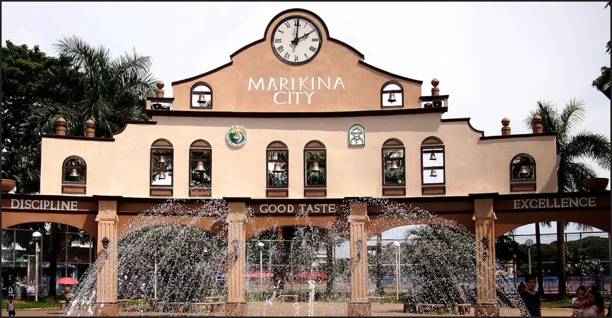

Description
The website will be about the city of Marikina here in the Philippines. It is the shoe capital of the country and is now rising as one of the top cities in Metro Manila.
Purpose
The website for the Marikina City Chamber of Commerce aims to serve as a valuable resource and platform for businesses, entrepreneurs, and stakeholders in Marikina City. With a clear purpose of fostering economic growth and development, the site provides information, networking opportunities, and support to local businesses. Whether it's assisting startups, providing resources for established businesses, or facilitating partnerships, the website intends to be a one-stop destination for all things related to commerce in Marikina City. By offering access to industry news, events, and initiatives, the website aims to promote collaboration, entrepreneurship, and innovation within the local business community.
Scenarios
- They are looking for information on local regulations, permits, and available resources.
- They visit the website to find information about upcoming networking events and conferences organized by the Chamber of Commerce.
- They navigate to the website's resources section, where they find a wealth of information on business management, marketing strategies, financing options, and relevant reports.
- They visit the website to learn about ongoing community engagement programs organized by the Chamber of Commerce.
- An international investor is interested in exploring investment opportunities in Marikina City.
Personas
Most of which will be people that are looking for employment opportunities,business ventures and expos. The personas will represent different user groups with specific needs and goals when visiting the Marikina City Chamber of Commerce website. By designing the website to cater to these personas' needs, the site can provide relevant information, resources, and support to its users, helping them achieve their objectives and engage with the local business community effectively.
Chamber's Logo
Style Guide
Color Palette
| Primary | Secondary | Accent 1 | Accent 2 |
|---|---|---|---|
| #1d1b1d | #949494 | #501d0c | #deb887 |
Typography:
Heading Font: Verdana
Paragraph Font: Calibri